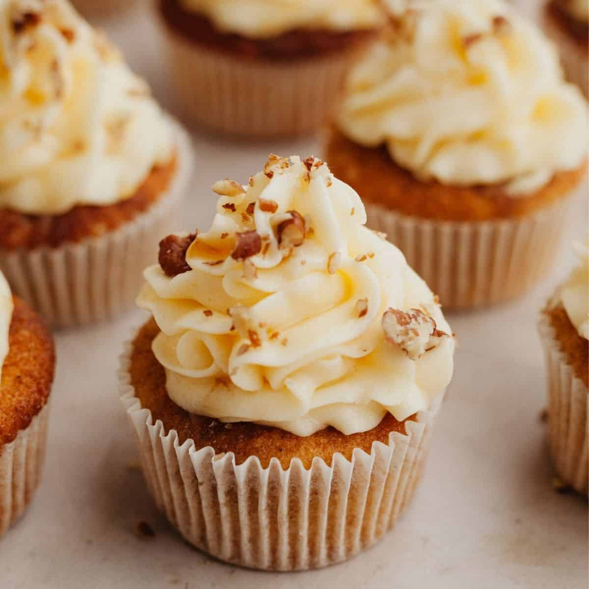

Maple Cupcakes

What you need to know about Maple Cupcakes
I came up with this maple cupcake recipe a couple of years ago. They taste great and are not too sweet!
Ingredients
- 1 cup maple syrup
- 1 large egg
- 1 ½ cups all-purpose flour
- ½ cup whole wheat flour
- 2 ¼ teaspoons baking powder
- ½ teaspoon ground nutmeg
- ½ teaspoon salt
- ¼ teaspoon ground ginger
- ½ cup milk
Directions
- Preheat the oven to 350 degrees F (175 degrees C). Grease two 12-cup muffin tins.
- Beat maple syrup and margarine together in a large bowl until well mixed and creamy. Mix in egg until combined.
- Combine all-purpose and whole wheat flours, baking powder, nutmeg, salt, and ginger in a small bowl. Add dry ingredients to the wet ingredients in batches, alternating with the milk, beating batter briefly after each addition. Fill the prepared muffin cups 3/4 full with batter.
- Bake in the preheated oven until a toothpick inserted in the centers comes out clean, 20 to 30 minutes.